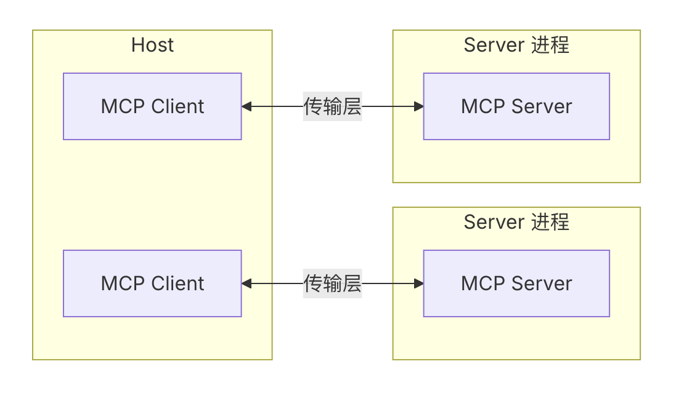
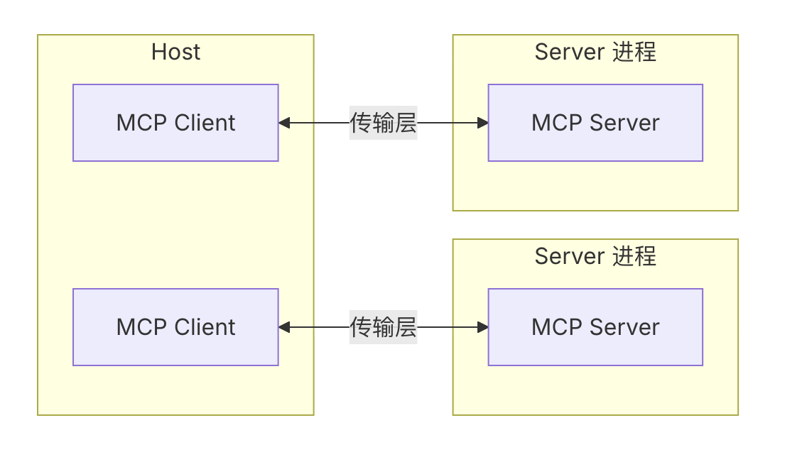

快速了解
简单理解
把MCP理解成像是一个AI世界的通用翻译官，让AI模型能够与各种各样的外部工具"对话"。它建立了一种标准化的通信方式，使不同的AI模型和工具能够无缝协作。
技术实现
模型上下文协议的技术实现旨在为大型语言模型应用与外部数据源和工具之间的无缝集成提供标准化的方法。协议基于JSON-RPC 2.0消息格式，建立状态连接，并支持服务器和客户端的能力协商。
统一标准
提供跨平台、跨模型的统一接口标准，降低开发和集成成本
高效交互
优化模型与工具间的通信效率，减少延迟和资源消耗
安全可控
内置权限管理和安全机制，确保工具调用的安全性和可控性
易于扩展
模块化设计使开发者能够轻松添加新工具和功能，适应不断变化的需求
大模型工具的发展史
1.0 时代：提示词驱动的工具调用
1.0时代
通过自然语言提示词（Prompt）引导大模型调用工具。
工具调用依赖模型对语言的理解，缺乏标准化和稳定性。
不可控性高：返回结果格式不稳定，难以解析和复用。
2.0 时代：Function Calling 标准化调用
2.0 时代：Function Calling 标准化调用
自动进行格式校验和纠错重试，提升可靠性。
减少对 token 的浪费，降低调用成本。
提高开发效率，便于集成和调试。

3.0 时代：MCP 的出现 多厂商、多工具统一
3.0 时代：MCP 的出现 多厂商、多工具统一
各厂商 Function Calling 接口不统一，集成成本高。
相同工具在不同平台重复开发，缺乏复用机制。
MCP核心机制
Host-Client-Server架构
MCP采用了灵活而强大的Host-Client-Server架构，这种三层架构设计为智能编译提供了坚实的基础，同时确保了系统的可扩展性和安全性。
Host层
如 Claude Desktop、IDE 或 AI 工具，希望通过 MCP 访问数据的程序
Client层
维护与服务器一对一连接的协议客户端
Server层
轻量级程序，通过标准的 Model Context Protocol 提供特定能力
 

MCP的工作原理

MCP作为一个开放的通信协议，定义了AI应用（Host）、MCP客户端（Client）和外部工具服务（Server）之间的标准化交互方式。
协议握手
Client与Server建立连接，交换协议版本信息和能力声明，确保双方兼容性。
资源发现
Client查询Server提供的工具列表、资源类型和可用功能，建立完整的能力映射。
工具调用
Host通过Client发送标准化的工具调用请求，Server执行相应操作并返回结构化结果。
上下文管理
协议支持会话状态维护和上下文传递，确保多轮交互的连贯性和数据一致性。
开发者工具生态
主流IDE与工作流集成
MCP协议的一个重要优势是其与现代开发环境的无缝集成能力。通过与主流IDE和开发工具的深度整合，MCP为开发者提供了自然且高效的AI辅助编程体验。
Visual Studio Code
通过官方MCP扩展，VS Code提供完整的AI辅助编程体验，支持智能代码补全、重构建议和实时错误检测。
Cursor
AI原生代码编辑器，内置强大的AI助手，支持自然语言编程和智能代码生成，提供流畅的AI编程体验。
Windsurf
首个代理式IDE，配备Cascade AI助手，具备深度代码库理解能力和实时协作功能，重新定义AI编程体验。
Trae AI
自适应AI开发环境，通过智能代理自动化重复任务，提供对话式编程交互和实时代码优化建议。
JetBrains系列
支持IntelliJ IDEA、PyCharm、WebStorm等全系列IDE，提供企业级AI开发工具集成和专业框架支持。
GitHub Copilot
GitHub Copilot是由GitHub与OpenAI合作开发的一款革命性的智能代码补全和生成工具，旨在帮助开发人员更高效、更准确、更快地编写代码
实战动手
Spring-AI编写MCP工具
Spring AI框架提供了对MCP的原生支持，使Java开发者能够轻松集成和扩展MCP功能。以下是使用Spring AI创建自定义MCP工具的示例。
步骤1: 创建mcp server项目
添加spring ai 及 mcp server相关依赖
步骤2: 编写mcp工具
使用@MCP注解创建自定义工具类，定义工具的名称、参数和执行逻辑。
步骤3: 创建cmp client项目
使用MCPClient发送请求并处理响应，将MCP工具集成到应用流程中。
步骤4: 配置和使用
配置AI提供商和模型参数，在控制器或其他组件中注入并使用MCP服务。
@GetMapping(value = "/generate", produces = "text/event-stream")
public Flux generate(@RequestParam String message) {
Message userMessage = new UserMessage(message);
SystemPromptTemplate systemPromptTemplate = new SystemPromptTemplate(systemResource);
Message systemMessage = systemPromptTemplate.createMessage();
SimpleLoggerAdvisor loggerAdvisor = SimpleLoggerAdvisor.builder().build();
MessageChatMemoryAdvisor chatMemoryAdvisor = MessageChatMemoryAdvisor.builder(chatMemory).build();
return chatClient.prompt(new Prompt(List.of(userMessage, systemMessage)))
.advisors(chatMemoryAdvisor, loggerAdvisor)
.stream()
.chatResponse()
.mapNotNull(chatResponse -> chatResponse.getResult().getOutput().getText())
.doOnComplete(() -> {
});
}
拓展知识A2A
Agent2Agent (A2A) 协议是由谷歌发起的开放标准，旨在实现不同 AI 代理系统之间的通信和互操作性。
A2A 协议的重点
- 代理发现
- 任务管理
- 多种内容类型
- 实时更新
MCP 协议的重点
- 工具调用
- 上下文增强
- API 集成
- 数据检索
实用学习AI工具
- 和GPT一起学习 Studywithgpt
- AI驱动的快速学习代码库神器 Deepwiki
- 一站式开源的模型即服务共享平台 ModelScope